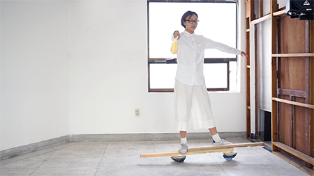

A Multi-level Crossing Diagram, 2018
Open Studio, 2018
Under The Circular, 2015
Copyright © 2018 Lim Cha
all rights reserved.
발가락에 힘을 주고 움츠린 채 서기, RAT 프로젝트, 서울, 2016
Stands with shrunk Toes, RAT projectt, Seoul, 2016


<발가락에 힘을 주고 움츠린 채 서기> 전시 전경
<Stands with Shrunk Toes> an installation view
일시: 2016년 8월 27일, 28일
오프닝: 2016년 8월 27일 8시
관람: 오후 1-8시
주소: 서울 특별시 종로구 돈의동 37번지

유인물 디자인: 이재환
기록 촬영: 은재필, 디륵 플라이쉬만
Leaflet design: Jaehwan Lee
(http://cargocollective.com/hwnlee/Cha-Hyelim_RAT-lab-5-182-257mm-2016)
Photo: Jaephil Eun, Dirk Fleischmann